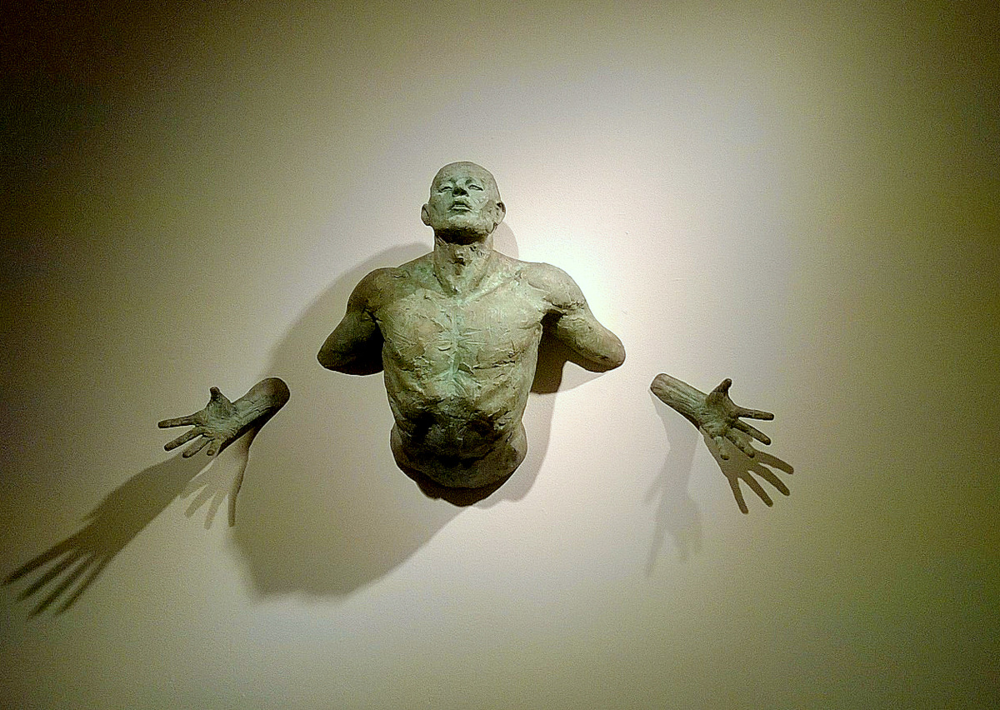
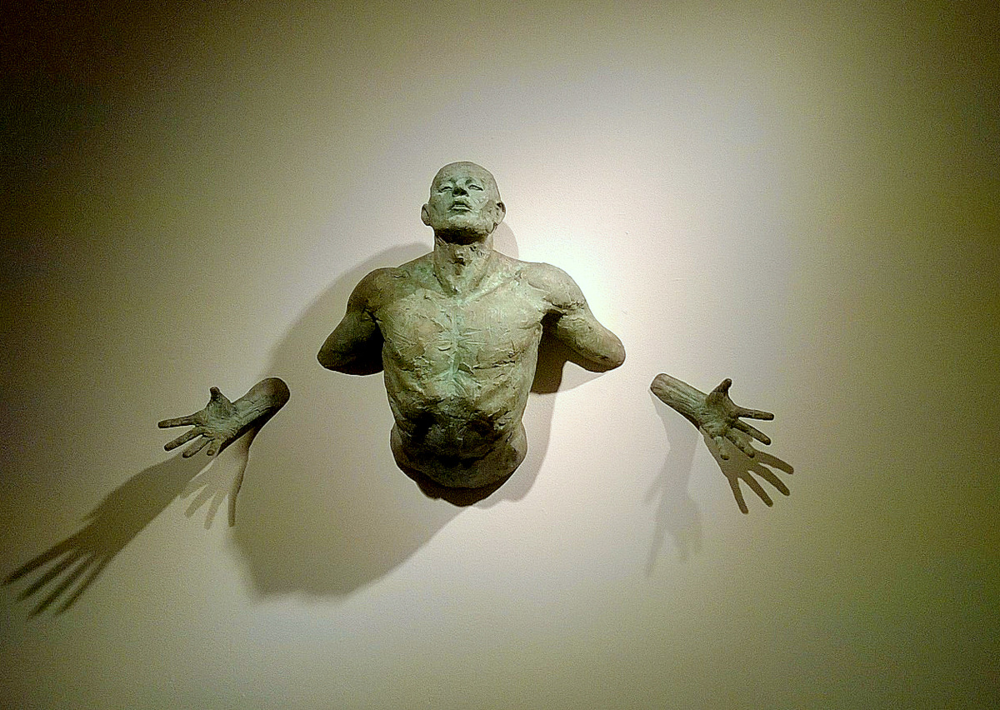

Spintos stumdomomis durimis internetu | Baldai PL
2020.10.29 07:48

+370 68470444 info@baldaipl.lt Darbo laikas: I-V 9:00-18:00 Kontaktai Apie mus Pristatymas Taisyklės Baldai Visi Batų dėžės Čiužiniai Foteliai Kampai Kėdės Komodos Lentynos Lovos Miegamojo komplektai Prieškambario komplektai Rūbų kabyklos Sekcijos Sofos lovos Spintos Stalai Stalų ir kėdžių komplektai Virtuvės komplektai Staliukai Svetainė Komplektai Konsolės staliukai Kėdės Kolekcijos Komodos Lentynos Sekcijos Spintelės Spintos Stalai Staliukai TV staliukai Veidrodžiai Vitrinos Miegamasis Antčiužiniai, čiužinių užvalkalai Kolekcijos Tualetiniai staliukai Čiužiniai Komodos Komplektai Lovos Kontinentinės Lovos Lovų grotelės Naktiniai staliukai Spintos Veidrodžiai Vaikų kambarys Čiužiniai Kompiuterio Kėdės Vaikų kambario baldų komplektai Kolekcijos Komodos Lentynos Lovos Rašomieji stalai Spintelės Spintos Stalai ir staliukai Kėdės Vonia Vonios baldų kolekcijos Vonios Baldų Komplektai Pastatomos vonios spintelės Pakabinamos vonios spintelės Virtuvė Indaplovių durelės Komplektai Kriauklės virtuvei Medžiagos Stalviršiai Virtuvinės Sienelės Kolekcijos Baro kėdės Baro staliukai Spintelės Stalai Stalų ir kėdžių komplektai Kėdės Minkšti baldai Komplektai Pufai Foteliai Kampai Sofos lovos Biuro baldai Darbo , biuro kėdės Kolekcijos Rašomieji stalai Biuro stalai Prieškambaris Prieškambario baldų kolekcijos Prieškambario komplektai Prieškambario Spintos Suoliukai Batų dėžės Rūbų kabyklos Kontaktai Apie mus Pristatymas Taisyklės Nemokamas
pristatymas Atsiskaitymas grynais
arba kortele Saugus
pirkimas Pirkimas
lizingu Prisijungti 0 | 0.00 €
Jūsų prekių krepšelis tuščias
0 | 0.00 € Baldai Visi Batų dėžės Čiužiniai Foteliai Kampai Kėdės Komodos Lentynos Lovos Miegamojo komplektai Prieškambario komplektai Rūbų kabyklos Sekcijos Sofos lovos Spintos Stalai Stalų ir kėdžių komplektai Virtuvės komplektai Staliukai Svetainė Komplektai Konsolės staliukai Kėdės Kolekcijos Komodos Lentynos Sekcijos Spintelės Spintos Stalai Staliukai TV staliukai Veidrodžiai Vitrinos Miegamasis Antčiužiniai, čiužinių užvalkalai Kolekcijos Tualetiniai staliukai Čiužiniai Komodos Komplektai Lovos Kontinentinės Lovos Lovų grotelės Naktiniai staliukai Spintos Veidrodžiai Vaikų kambarys Čiužiniai Kompiuterio Kėdės Vaikų kambario baldų komplektai Kolekcijos Komodos Lentynos Lovos Rašomieji stalai Spintelės Spintos Stalai ir staliukai Kėdės Vonia Vonios baldų kolekcijos Vonios Baldų Komplektai Pastatomos vonios spintelės Pakabinamos vonios spintelės Virtuvė Indaplovių durelės Komplektai Kriauklės virtuvei Medžiagos Stalviršiai Virtuvinės Sienelės Kolekcijos Baro kėdės Baro staliukai Spintelės Stalai Stalų ir kėdžių komplektai Kėdės Minkšti baldai Komplektai Pufai Foteliai Kampai Sofos lovos Biuro baldai Darbo , biuro kėdės Kolekcijos Rašomieji stalai Biuro stalai Prieškambaris Prieškambario baldų kolekcijos Prieškambario komplektai Prieškambario Spintos Suoliukai Batų dėžės Rūbų kabyklos Patarimai DUK Kambarių dizainas Naujienos Kontaktai Apie mus Pristatymas Taisyklės Prisijungti / Registruotis Visi Batų dėžės Čiužiniai Foteliai Kampai Kėdės Komodos Lentynos Lovos Miegamojo komplektai Prieškambario komplektai Rūbų kabyklos Sekcijos Sofos lovos Spintos Stalai Stalų ir kėdžių komplektai Virtuvės komplektai Staliukai Svetainė Komplektai Konsolės staliukai Kėdės Kolekcijos Komodos Lentynos Sekcijos Spintelės Spintos Stalai Staliukai TV staliukai Veidrodžiai Vitrinos Miegamasis Antčiužiniai, čiužinių užvalkalai Kolekcijos Tualetiniai staliukai Čiužiniai Komodos Komplektai Lovos Kontinentinės Lovos Lovų grotelės Naktiniai staliukai Spintos Veidrodžiai Vaikų kambarys Čiužiniai Kompiuterio Kėdės Vaikų kambario baldų komplektai Kolekcijos Komodos Lentynos Lovos Rašomieji stalai Spintelės Spintos Stalai ir staliukai Kėdės Vonia Vonios baldų kolekcijos Vonios Baldų Komplektai Pastatomos vonios spintelės Pakabinamos vonios spintelės Virtuvė Indaplovių durelės Komplektai Kriauklės virtuvei Medžiagos Stalviršiai Virtuvinės Sienelės Kolekcijos Baro kėdės Baro staliukai Spintelės Stalai Stalų ir kėdžių komplektai Kėdės Minkšti baldai Komplektai Pufai Foteliai Kampai Sofos lovos Biuro baldai Darbo , biuro kėdės Kolekcijos Rašomieji stalai Biuro stalai Prieškambaris Prieškambario baldų kolekcijos Prieškambario komplektai Prieškambario Spintos Suoliukai Batų dėžės Rūbų kabyklos Patarimai DUK Kambarių dizainas Naujienos Pradžia Baldai Miegamasis Spintos Spintos stumdomomis durimis Filtrai Standartinė Pavadinimas (A - Z) Pavadinimas (Z - A) Kaina (Žema Aukšta) Kaina (Aukšta Žema) Įvertinimai (Aukščiausi) Įvertinimai (Žemiausi) Prekės kodas (A - Z) Prekės kodas (Z - A) Rūšiuoti pagal: 15 25 50 75 100 Rodyti: Kaina iki € Kaina Plotis iki cm Plotis Aukštis iki cm Aukštis Gylis iki cm Gylis Pristatymo terminas, d.d. 18 20 25 35 Pristatymo terminas, d.d. Reitingas Reitingas AkcijaALASKA 100 Spinta
171.00 € Išmatavimai Plotis (cm): 100 Aukštis (cm): 206 Gylis (cm): 62 UžsakytiALASKA 150 Spinta
249.00 € Išmatavimai Plotis (cm): 150 Aukštis (cm): 200 Gylis (cm): 62 UžsakytiALASKA 200 Spinta
313.00 € Išmatavimai Plotis (cm): 200 Aukštis (cm): 214 Gylis (cm): 62 UžsakytiALBA 250 cm spinta be veidrodžio
345.00 € Išmatavimai Plotis (cm): 250 Aukštis (cm): 218 Gylis (cm): 61 UžsakytiAlba 250 Spinta Balta su veidrodžiu
384.00 € Išmatavimai Plotis (cm): 250 Aukštis (cm): 218 Gylis (cm): 61 UžsakytiAlba 250 Spinta Juoda su veidrodžiu
384.00 € Išmatavimai Plotis (cm): 250 Aukštis (cm): 218 Gylis (cm): 61 UžsakytiAlba 250 Spinta Sonoma su veidrodžiu
384.00 € Išmatavimai Plotis (cm): 250 Aukštis (cm): 218 Gylis (cm): 61 UžsakytiAmsterdam 203 Spinta
434.00 € Išmatavimai Plotis (cm): 208 Aukštis (cm): 225 Gylis (cm): 61 UžsakytiAmsterdam 250 L Spinta
533.00 € Išmatavimai Plotis (cm): 255 Aukštis (cm): 225 Gylis (cm): 61 UžsakytiAmsterdam 250 Spinta
517.00 € Išmatavimai Plotis (cm): 255 Aukštis (cm): 225 Gylis (cm): 61 UžsakytiANTICA A-146 Antica Spinta su veidrodžiu
314.00 € Išmatavimai Plotis (cm): 146 Aukštis (cm): 220 Gylis (cm): 68 UžsakytiANTICA A-183 Antica Spinta su veidrodžiu
399.00 € Išmatavimai Plotis (cm): 183 Aukštis (cm): 220 Gylis (cm): 68 UžsakytiANTICA A-211 Antica Spinta su veidrodžiu
418.00 € Išmatavimai Plotis (cm): 211 Aukštis (cm): 220 Gylis (cm): 68 UžsakytiAruba 2 203 Spinta
336.00 € Išmatavimai Plotis (cm): 203 Aukštis (cm): 215 Gylis (cm): 61 UžsakytiAruba 2 250 Spinta
427.00 € Išmatavimai Plotis (cm): 250 Aukštis (cm): 215 Gylis (cm): 61 Užsakyti 1 2 3 4 5 6 7 8 9 Pirmyn >Spintos stumdomomis durimis
Kai kuriame interjerą, paprastai daug dėmesio skiriame baldams, ypač – spintoms. Iš tiesų, svarbu viską suplanuoti ir suderinti iš anksto. Nors gali pasirodyti, kad išsirinkti spintą – labai paprasta, pradėję paieškas dažnai susiduriame su keblumais. Kokią spintą išsirinkti, kokio dydžio baldas reikalingas, kokio dizaino spinta tinka labiausiai – vos keli esminiai klausimai. Baldaipl.lt siūlomos spintos stumdomomis durimis yra įvairių matmenų ir dizainų. Tuo pasižymi ir baldai varstomomis durimis, kampinės spintos, tad pasirinkti išties gali būti nelengva. Tam, kad tobulą baldą atrastumėte lengvai, siūlome pasinaudoti keliais patarimais.
Kur ir kam naudosite spintą?
Patariame pradėti dairytis spintos tik tuomet, kai galutinai apsispręsite, kurioje patalpoje ir kurioje jos dalyje baldas stovės, kaip atrodys aplinkiniai baldai, kitos interjero detalės ir pan. Aptarkime šiuos svarbiausius aspektus išsamiau:
Spintos vieta . Spintą galite išsirinkti pagal tai, kuriame kambaryje ji stovės. Pavyzdžiui, baldas gali būti reikalingas tiek mažame, kompaktiškame miegamajame, tiek erdviame. Svarbu ir tai, ar įrengiate nuosavą, ar svečių miegamąjį. Be to, įtakos turi ir pačios patalpos forma, matmenys. Verta žinoti, kad spintos stumdomomis durimis labai patogios mažose patalpose, kur itin svarbus funkcionalumas, vietos taupymas. Čia puikiai tinka ir kampinės spintos. Spintos gylis, talpumas . Miegamajame stovinti spinta, ko gero, bus daugiausia skirta drabužiams susidėti. Tuo atveju, jei miegamuoju su niekuo nesidalinate, gali užtekti ir nedidelio baldo. Vėliau prireikus šalia galite sumontuoti ir lentyną, komodą. Jei įrengiate vaikų miegamąjį arba turite antrąją pusę, suprantama, kad prireiks gilesnio, talpesnio baldo. Įvertinkite spintos sandarą – ar joje yra pakankamai lentynų, stalčių. Poreikiai . Nuo to, kiek ir kokių daiktų ketinate laikyti spintoje, taip pat priklauso baldo matmenys, dizainas. Pavyzdžiui, jei daugumą drabužių norėsite susikabinti, reikėtų tokios spintos stumdomomis durimis, kurioje įrengta atskira talpi kabykla. Žinoma, tikti gali ir baldas varstomomis durimis. Jei spintoje laikysite ir įvairius didesnius daiktus, pravers specialus skyrius apačioje ar tiesiog lentynėlės.Miegamasis, priešingai nei, pavyzdžiui, svetainė, turi idealiai atitikti individualius poreikius. Nors šiuo kambariu naudojamės palyginti nedaug, čia tiesiog būtinas funkcionalumas, patogumas. Dėl to verta pirmiau apgalvoti baldo praktines ypatybes, ir tik tuomet – pageidaujamą dizainą.
Kokio dizaino spintą rinktis?
Dizainas – tai, kas paverčia baldą traukiančiu žvilgsnį, papildančiu bendrą kambario ar visų namų interjerą. Ko gero, net neverta ginčytis, kad dailiu daiktu naudotis yra žymiai maloniau. Tam nuvertinti spintos išvaizdos tikrai nereikėtų – net jei ja naudositės vieni. „Baldai PL“ siūlomos spintos stumdomomis durimis pasižymi skirtingais dizainais, tad čia galite užsisakyti tokį baldą, kuris atitiks visus ne tik funkcinius, bet ir estetinius lūkesčius.
Nepriklausomai nuo to, ar miegamajame jau yra kitų baldų, ar juos tik planuojate įsigyti, pasistenkite, kad visi kambario elementai derėtų tarpusavyje. Galite spintą priderinti prie kitų baldų spalva, dydžiu, durų tipu.
Jeigu išsirinkote spalvą, tačiau nežinote, koks dizainas tiktų ir būtų patogus, vėlgi pagalvokite apie tai, kaip ir kiek spintą naudosite. Atkreipkite dėmesį į tai, kad siūlome spintas su veidrodžiais arba be jų. Jei miegamajame neturite kito veidrodžio, baldas su veidrodinėmis durimis – itin praktiškas pasirinkimas. Parinkę baldui tinkamą vietą, save galėsite patogiai matyti visu ūgiu.
Viskas, ko reikia tam, kad atrastumėte puikiai tinkančią spintą – tiesiog atidus poreikių įvertinimas. Tad neskubėkite, peržiūrėkite visą katalogą, kuriame pristatomos miegamojo spintos stumdomomis durimis, varstomi ir kampiniai baldai, arba tiesiog pasinaudokite patogia paieška. Jei dvejojate dėl pasirinkimo, norite palyginti kelias prekes ar daugiau sužinoti apie konkrečią spintą, visuomet galite kreiptis į „Baldai PL“ konsultantus. Jie padės tinkamai įvertinti visus pasirinkimo aspektus ir atrasti tokį baldą, kuris pavers miegamąjį tikra komforto oaze.
Kontaktai Apie mus Pristatymas Taisyklės Svetainės žemėlapisBendraukime:
Gaukite naujausius Pasiūlymus pirmieji © Uab baldai pl 2016 Baldai PL- Spintos stumdomomis durimis internetu | Baldai PL
- Miegamojo spintos Internetu pigiau Žema kaina | b-a.eu
- Baldurama – natūralios medinės miegamojo spintos internetu
- SPINTOS | Antiknews
- Spintos gera kaina ir nemokamu pristatymu | Baldai1.lt
- Spintos - Berry baldai
- SPINTOS - DAIKTŲ LAIKYMAS
- Spintos | balduturgus.lt
- Spinta-lova - Leojar.lt
- Spintos - Lenkijosbaldai24.lt
- Spintos stumdomomis durimis internetu | Baldai PL
Itin mėgstamos prieškambario spintos stumdomomis durimis, leidžiančios maksimaliai išnaudoti turimą vietą, o jeigu jos kambaryje dar mažiau – Jums pravers kampinė spinta. Miegamojo spintos dažniausiai būna gerokai didesnės, tačiau atsižvelgdami į savo lūkesčius ir kambario dydį, greitai surasite Jums tiksiantį baldą.
- Miegamojo spintos Internetu pigiau Žema kaina | b-a.eu
Labai išradingas sprendimas yra pirkti spinta tai veiks kaip viršutinių drabužių ir batų laikymo vieta. Tačiau verta pažvelgti į drabužių spintelę su kita akimi, nes ji taip pat turi estetinę vertę. Platus dekorų iš tradicinių medžio drožlių vijerų su šiuolaikinėmis blizgančiomis versijomis danga mums suteiks daug vietos.
- Baldurama – natūralios medinės miegamojo spintos internetu
Mūsų spintų asortimentą sudaro šimtai gaminių. Dėkojame šimtai brangiam klientui, jūs galite lengvai rasti tinkamą modelį, nepriklausomai nuo jūsų nustatytų reikalavimų. Kad pasirinkta spinta būtų visiškai patenkinta ir galėtų įvykdyti jam skirtą vaidmenį, reikia atsižvelgti į šiuos aspektus. Kambarys Kur bus baldai? Tai labai svarbus klausimas, nes ne kiekvienas ...
- SPINTOS | Antiknews
365 dienų grąžinimo garantija. Jei nesate 100% patenkinti savo kokybiška preke, ją galite grąžinti per 365 kalendorines dienas.
- Spintos gera kaina ir nemokamu pristatymu | Baldai1.lt
Raudonmedžio spinta 61x134x253 cm € 650.00; Rūbų spinta 66x229x196 cm € 499.00; Ąžuolinė spinta 59x130x196 cm € 380.00; Art deco knygų spinta 45x112x190 cm € 299.00; Art deco spinta 41x120x175 cm € 380.00; Sekreteras – knygų spinta 48x100x188 cm € 420.00; Art Deco indauja 40x114x192 cm € 320.00; Ąžuolinė spinta ...
- Spintos - Berry baldai
Spinta 203806 597 € Spalva: Antracitas, Balta, Wotan ąžuolas + balta, +1
- SPINTOS - DAIKTŲ LAIKYMAS
Mėnesio pasiūlymas SPINTOS Pagaminsim ir sumontuosim spintą, kuri racionaliai išnaudos bet kokį kambario plotą, tad net mažiausia niša gali tapti naujais Jūsų daiktų namais. Daugiau DRABUŽINĖ Reikalinga drabužinė? Mielai padėsime ją susiprojektuoti kuo patogiau ir talpiau. Daugiau Pertvaros Panaudojant stumdomų durų sistemas galima atitverti praktiškai bet kokią ervę ...
- Spintos | balduturgus.lt
PATIKIMAS PRISTATYMAS. Užsisakykite iš elektroninės parduotuvės 24/7. PIRKIMAS IŠSIMOKĖTINAI. Įsigyk dabar, mokėk vėliau. REGISTRUOKITĖS. Užsiprenumeruokite mūsų naujienlaiškį ir gaukite 7€ nuolaidą pirmam apsipirkimui
- Spinta-lova - Leojar.lt
Miegamojo spinta dažytu paviršiumi gali atrodyti labai šviežiai ir patraukliai. Tokia apdaila – labai universali, nes ją lengva derinti beveik bet kokioje aplinkoje. Jei mėgstate dažnai atnaujinti savo miegamąjį, ypač keisti sienų spalvas, rinkitės baltą spintą – ji puikiai derės bet kokios spalvos interjere.
- Spintos - Lenkijosbaldai24.lt
Miegamajame stovinti spinta, ko gero, bus daugiausia skirta drabužiams susidėti. Tuo atveju, jei miegamuoju su niekuo nesidalinate, gali užtekti ir nedidelio baldo. Vėliau prireikus šalia galite sumontuoti ir lentyną, komodą. Jei įrengiate vaikų miegamąjį arba turite antrąją pusę, suprantama, kad prireiks gilesnio, talpesnio baldo.
Itin mėgstamos prieškambario spintos stumdomomis durimis, leidžiančios maksimaliai išnaudoti turimą vietą, o jeigu jos kambaryje dar mažiau – Jums pravers kampinė spinta. Miegamojo spintos dažniausiai būna gerokai didesnės, tačiau atsižvelgdami į savo lūkesčius ir kambario dydį, greitai surasite Jums tiksiantį baldą.
Labai išradingas sprendimas yra pirkti spinta tai veiks kaip viršutinių drabužių ir batų laikymo vieta. Tačiau verta pažvelgti į drabužių spintelę su kita akimi, nes ji taip pat turi estetinę vertę. Platus dekorų iš tradicinių medžio drožlių vijerų su šiuolaikinėmis blizgančiomis versijomis danga mums suteiks daug vietos.
Mūsų spintų asortimentą sudaro šimtai gaminių. Dėkojame šimtai brangiam klientui, jūs galite lengvai rasti tinkamą modelį, nepriklausomai nuo jūsų nustatytų reikalavimų. Kad pasirinkta spinta būtų visiškai patenkinta ir galėtų įvykdyti jam skirtą vaidmenį, reikia atsižvelgti į šiuos aspektus. Kambarys Kur bus baldai? Tai labai svarbus klausimas, nes ne kiekvienas ...
365 dienų grąžinimo garantija. Jei nesate 100% patenkinti savo kokybiška preke, ją galite grąžinti per 365 kalendorines dienas.
Raudonmedžio spinta 61x134x253 cm € 650.00; Rūbų spinta 66x229x196 cm € 499.00; Ąžuolinė spinta 59x130x196 cm € 380.00; Art deco knygų spinta 45x112x190 cm € 299.00; Art deco spinta 41x120x175 cm € 380.00; Sekreteras – knygų spinta 48x100x188 cm € 420.00; Art Deco indauja 40x114x192 cm € 320.00; Ąžuolinė spinta ...
Spinta 203806 597 € Spalva: Antracitas, Balta, Wotan ąžuolas + balta, +1
Mėnesio pasiūlymas SPINTOS Pagaminsim ir sumontuosim spintą, kuri racionaliai išnaudos bet kokį kambario plotą, tad net mažiausia niša gali tapti naujais Jūsų daiktų namais. Daugiau DRABUŽINĖ Reikalinga drabužinė? Mielai padėsime ją susiprojektuoti kuo patogiau ir talpiau. Daugiau Pertvaros Panaudojant stumdomų durų sistemas galima atitverti praktiškai bet kokią ervę ...
PATIKIMAS PRISTATYMAS. Užsisakykite iš elektroninės parduotuvės 24/7. PIRKIMAS IŠSIMOKĖTINAI. Įsigyk dabar, mokėk vėliau. REGISTRUOKITĖS. Užsiprenumeruokite mūsų naujienlaiškį ir gaukite 7€ nuolaidą pirmam apsipirkimui
Miegamojo spinta dažytu paviršiumi gali atrodyti labai šviežiai ir patraukliai. Tokia apdaila – labai universali, nes ją lengva derinti beveik bet kokioje aplinkoje. Jei mėgstate dažnai atnaujinti savo miegamąjį, ypač keisti sienų spalvas, rinkitės baltą spintą – ji puikiai derės bet kokios spalvos interjere.
Miegamajame stovinti spinta, ko gero, bus daugiausia skirta drabužiams susidėti. Tuo atveju, jei miegamuoju su niekuo nesidalinate, gali užtekti ir nedidelio baldo. Vėliau prireikus šalia galite sumontuoti ir lentyną, komodą. Jei įrengiate vaikų miegamąjį arba turite antrąją pusę, suprantama, kad prireiks gilesnio, talpesnio baldo.
 
